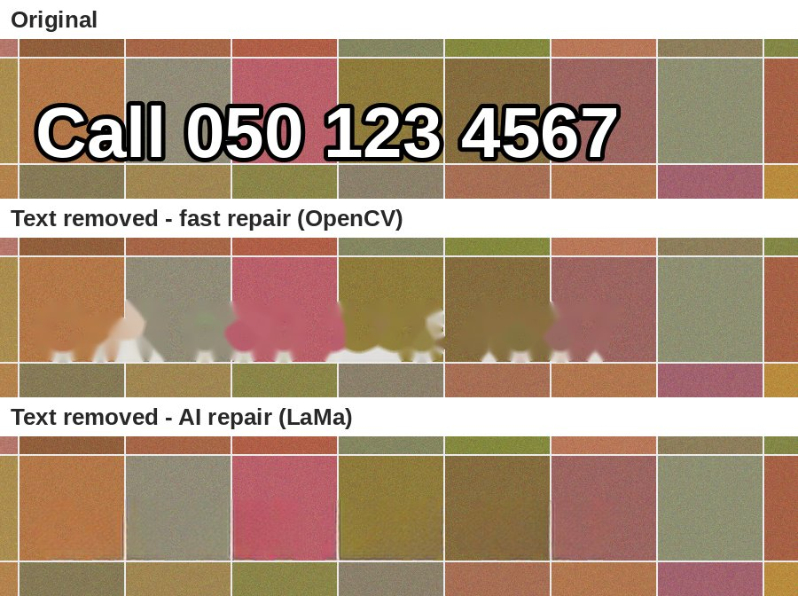

Open source · AI-powered
New phone number, branch, website or offer date? VidTextSwap finds the old text in every video and image, removes it, and redraws the new text with the same size, colour, outline and boldness.
Colab runs it on Google's free machines: press Run all, then open the link it prints. No install.
Fill colour, outline colour and thickness, bold or regular, condensed fonts, ALL CAPS, centred or left-aligned.
LaMa, an AI inpainting model, restores tiles, stone and textures behind the old text.
Frame-accurate timing, moving footage stays natural, and the audio is kept.
050 123 4567 also matches 0501234567 and +971 50 123 4567.
"Our new number is … and the offer ends 15 Jan" is turned into exact rules, with free AI options.
Originals are never touched. You get previews, a report, and only the files that changed.

Open the Colab notebook, press Run all, and use the web app it starts.
Private, with no limits. Python 3.10+.
pip install git+https://github.com/mohammedsaif/vidtextswap.gitA whole folder of videos and images:
vidtextswap -i media --find "050 123 4567" --replace "050 765 4321" --review